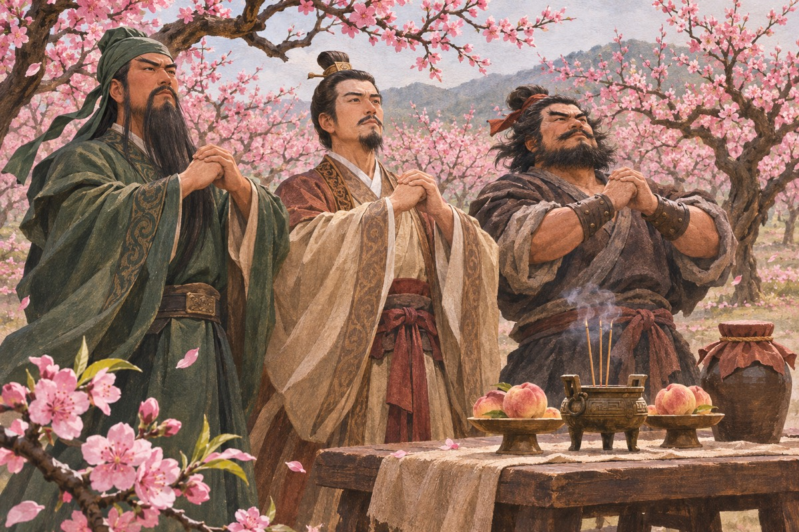
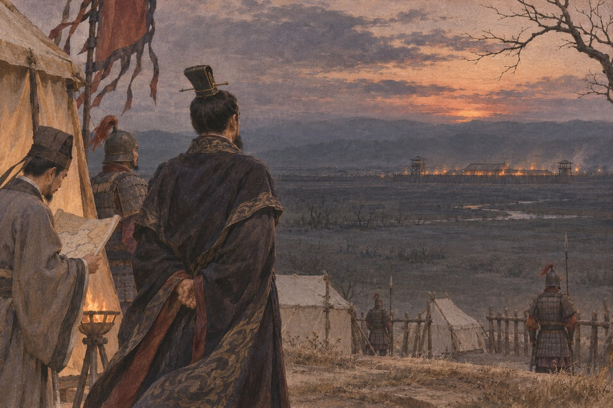
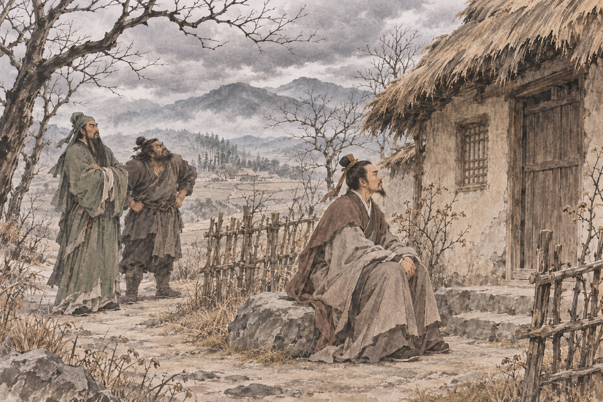
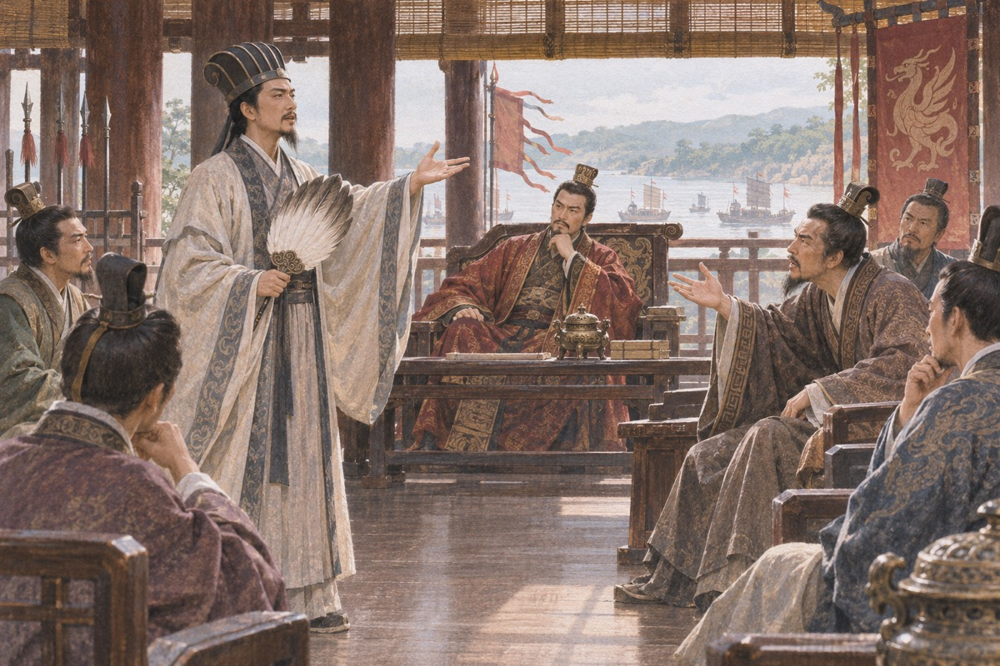
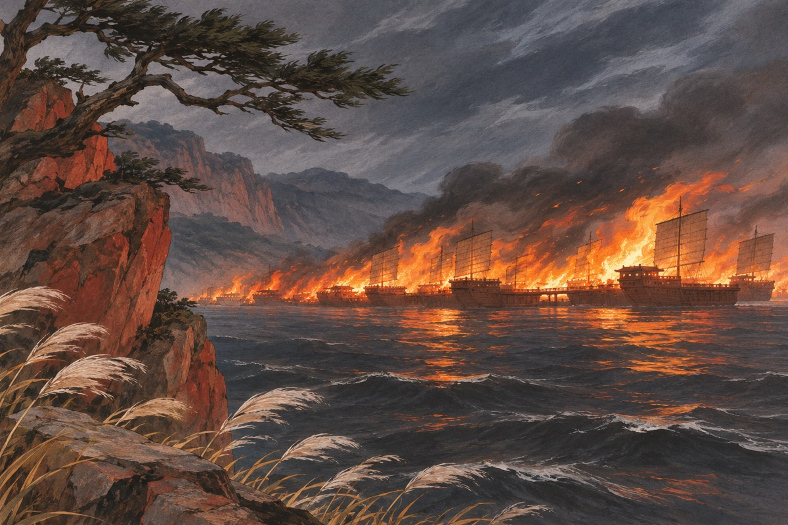
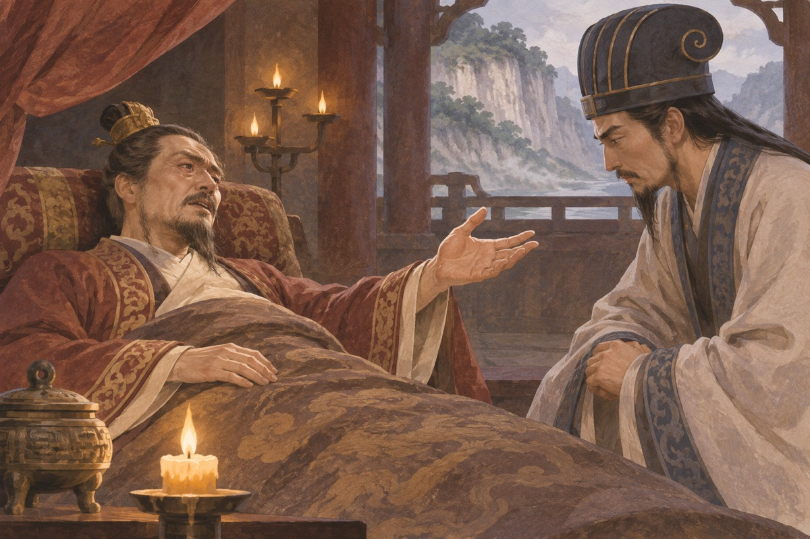
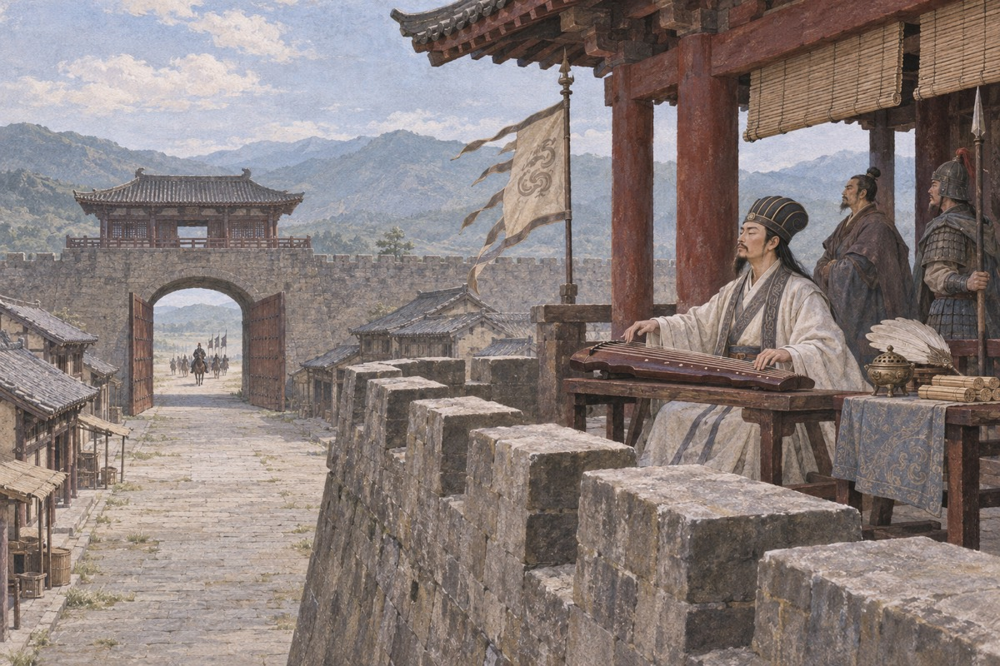
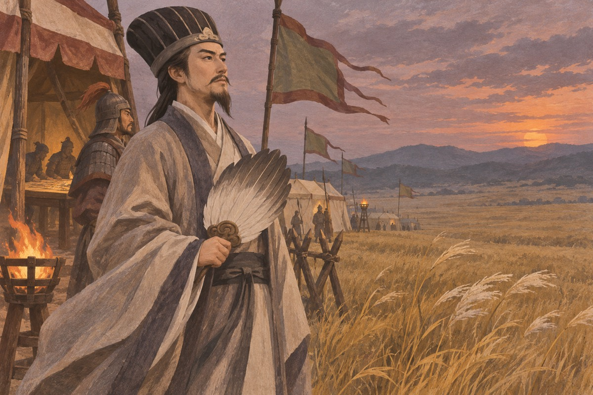
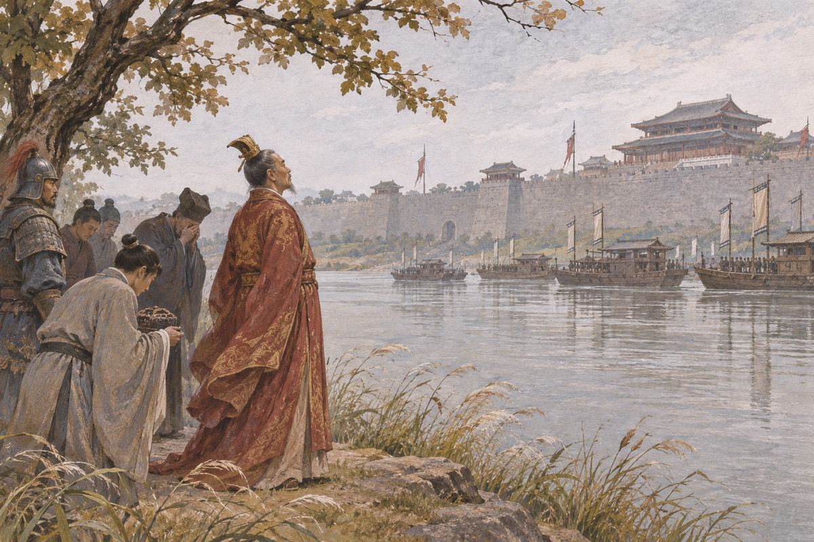

桃园结义
东汉末年，张角发动黄巾起事。官府张榜募兵，刘备在涿郡遇见张飞，两人饮酒时又结识关羽。三人志趣相投，次日在张飞庄后的桃园备祭告天，以刘备为兄、关羽为次、张飞为弟，随后募集乡勇投身战事。
出处 · 毛宗岗本第1回〈宴桃园豪杰三结义 斩黄巾英雄首立功〉

黄巾败退与怒鞭督邮
朝廷派卢植、皇甫嵩、朱儁等讨伐黄巾。刘备带关羽、张飞先助卢植，后转入朱儁军中。黄巾主力败退后，刘备因军功任安喜县尉。督邮到县里查访时，张飞把他绑住鞭打。刘备挂印离任，三兄弟由此再度离开官府。
出处 · 毛宗岗本第1–2回
董卓入京
汉灵帝死后，何进立刘辩为帝，与宦官十常侍争权。何进召董卓带西凉兵入京相助，结果自己被宦官骗进宫杀死。袁绍、曹操带兵杀尽宦官，洛阳血流成河。董卓的二十万西凉兵就在这时进了城。他废少帝，立九岁的刘协为献帝，自任相国，赞拜不名，入朝不趋，剑履上殿。朝堂上他按着剑说话，没有人敢抬头。他纵兵在洛阳城外劫掠，把百姓的头颅挂在车辕上，说是杀贼的功劳。董卓按剑说：今天下之事，在我一人。袁绍站起来说：你以为天下无人？他走了，从此反出洛阳。何进要杀十常侍，召董卓带兵入京。袁绍说：何必召外兵。何进不听。他进宫那天，被十常侍砍了头，头从宫墙上扔出来。
曹操献刀
董卓专权，朝中人人自危。司徒王允假称寿宴，把旧臣聚到家中，席间痛哭。曹操起身说：我愿借您的七星宝刀，去刺董卓。次日曹操入相府，董卓正背对他躺着，他从怀中取出刀。董卓从镜中看见刀光，猛然回头：孟德何为？曹操跪下说：我得了一口宝刀，特来献给相国。董卓接过看，果然是宝刀。曹操说：请让我试马。他骑上董卓赐的马，出府便往东门跑。董卓醒悟，派人追时，他已经出了洛阳。曹操逃出洛阳后，在中牟县被擒。县令陈宫放了他，说：我跟你走。后来陈宫看见他杀吕伯奢一家，说：你太狠了。曹操说：宁我负人。曹操借了王允的七宝刀，去董卓府上。董卓躺在床上，从镜子里看见他拔刀，说：你要做什么。曹操跪下说：我来献刀。他把刀举起来，双手奉上。
讨董联盟
曹操逃到陈留，散尽家财招兵，发檄文讨董。十八路诸侯会盟酸枣，推袁绍为盟主。孙坚做先锋，攻到洛阳城下。董卓烧了洛阳，迁都长安。诸侯们进了洛阳，看见的是一片焦土。曹操主张追击，袁绍不肯，其他人也不肯。曹操独自带兵去追，在荥阳被伏击，几乎全军覆没。他回到大营，看见诸侯们正在喝酒。联盟就此散了，各回各家，开始互相吞并。关羽温酒斩华雄，回来时酒还温着。袁绍说：此人何职？刘备说：马弓手。袁绍说：小小马弓手，也敢出头。曹操说：我敬他一杯。诸侯在酸枣会盟，天天喝酒，谁也不肯先上。曹操一个人带兵去追董卓，在荥阳被打得只剩几百人。他回来说：你们这些人，成不了事。
玉玺
孙坚攻入洛阳，在城南的井里打捞出一只锦囊，里面是传国玉玺。他藏了起来，托病回江东。袁绍得到消息，逼他交出，孙坚发誓没有，双方几乎动手。孙坚带兵回长沙，路过荆州，刘表受袁绍之托截击。孙坚在岘山中伏，被乱石砸死，年三十七。玉玺后来落到袁术手里，袁术称帝，两年后败死。一块玉，害死了两个诸侯。孙坚从井里捞出传国玉玺，抱在怀里，说要回江东。袁绍听说了，拦住他。孙坚发誓说没有。他后来死在荆州，玉玺落到袁术手里。
连环计
董卓迁都长安后更加暴虐，王允日夜想除掉他。他家中有一歌伎貂蝉，年方十六，色艺双全。王允先请吕布到家中饮酒，把貂蝉许给他；过了几天，又把貂蝉献给董卓。吕布发现自己被骗，貂蝉又在凤仪亭对他哭诉被董卓霸占。王允趁机激他：将军若肯为国除害，便是忠臣。初平三年四月，董卓入宫，吕布在宫门前一戟刺穿他的喉咙。董卓死后，尸体被扔在街上，守尸的士兵在他肚脐上点了灯，烧了三天三夜。吕布杀董卓后，貂蝉对他说：你杀了他，我就是你的人了。吕布说：我杀他，不是为了你。她说：我知道。王允把貂蝉先许给吕布，再送给董卓。吕布在凤仪亭遇见貂蝉，她哭着说：我是被逼的。吕布握紧了拳头。王允在旁边看着，一句话没说。
三让徐州
曹操打着报父仇的旗号打徐州，一路屠城，泗水为之不流。陶谦守不住，派人去请刘备。刘备带了几千人赶来，陶谦要把徐州让给他，他不要。陶谦病重，说：除了刘备，没人能安这个州。刘备还是推。陶谦死后，糜竺、陈登一起来劝，他才接。他说：我不是要这个州，我是怕它落到别人手里。
辕门射戟
袁术派纪灵打刘备，刘备向吕布求救。吕布把两家请到营里，说：我这一箭射中戟上小枝，你们就讲和。他退到一百五十步外，一箭射去，正中小枝。纪灵脸色变了，收兵走了。吕布把弓放下，说：我不是帮刘备，我是不想让袁术坐大。刘备站起来道谢，他说：不必。
白门楼
董卓死后，其部将李傕、郭汜反攻长安，吕布败走，王允被杀。吕布辗转投奔袁绍、张邈，最后占了徐州。建安三年，曹操联合刘备攻下邳，引沂水、泗水灌城。吕布部将侯成、宋宪绑了陈宫投降，吕布在白门楼被擒。他对曹操说：你得到我，天下不难平定。曹操有些心动。刘备在旁边说了一句：明公不见丁建阳、董卓之事乎？吕布大骂刘备。曹操下令缢死吕布，然后枭首。陈宫不肯降，从容赴死。吕布求降时，对曹操说：你得到我，天下不难平定。曹操犹豫，刘备说：明公不见丁建阳、董卓之事乎？吕布骂：大耳儿最无信。吕布被绑上白门楼，说：绳子太紧了。曹操说：捆老虎，不能不紧。吕布说：你放了我，我替你打天下。曹操问刘备。刘备说：你记得丁原和董卓吗。
煮酒论英雄
刘备被吕布击败，投奔曹操，住进许都。曹操待他如上宾，却始终不放心。一天，曹操在后园煮酒，请刘备来。席间曹操说：龙能大能小，能升能隐，好比英雄。玄德久历四方，必知当世英雄。刘备数了袁术、袁绍、刘表、孙策、刘璋，曹操一一摇头。最后曹操用手指他，又指自己：今天下英雄，唯使君与操耳。刘备手中的筷子掉在地上。恰好一声惊雷，他弯腰拾起，说：一震之威，乃至于此。曹操笑了：丈夫亦畏雷乎？这一笑，放过了他。曹操说：天下英雄，唯使君与操耳。刘备的筷子掉了。他说：一震之威，乃至于此。曹操笑了。刘备回去后，连夜收拾行李。曹操说：天下英雄，只有你我。刘备手里的筷子掉在地上，正好天上打雷。他弯腰捡起来，说：雷声太大。曹操笑了，说：大丈夫也怕雷。
衣带诏
刘备知道曹操容不下自己，借截击袁术的机会带兵离开许都。临走前，献帝咬破手指，在衣带上写下血诏，密付国舅董承，要他联络忠臣诛曹。董承又联络了王子服、种辑、吴硕、马腾、刘备，六人在衣带诏上签名。建安五年，事情败露，董承等五人被灭三族，怀有身孕的董贵人被绞死。刘备在徐州起兵，被曹操亲征击败，妻子被俘，关羽被迫降曹。董承拿出衣带诏时，手在抖。刘备说：我签。他签完，第二天就带兵走了。董承说：你不讲义气。他说：我留下，就死了。董承在衣带里藏了血诏，回家拿出来看，手在抖。刘备签了名，说：这件事，我做。他后来借着打袁术的由头，带兵走了，再没回来。
斩颜良
曹操东征刘备，刘备败投袁绍，关羽被围土山。张辽来劝降，关羽提出三事：降汉不降曹；二位嫂嫂以皇叔俸禄供养；一旦知道刘备下落，不管千里万里，立刻辞去。曹操答应了。袁绍派颜良攻白马，曹操派张辽、关羽迎战。关羽远远看见颜良的麾盖，策马冲入万军之中，一枪刺颜良于马下，割下首级回来，袁军无人敢挡。曹操表奏他为汉寿亭侯。关羽把印挂在屋中，说：我知道这是曹公的厚意，但我受刘将军厚恩，誓以共死。颜良的头被砍下时，袁军还没反应过来。曹操说：云长真神人也。关羽说：我三弟张飞，百万军中取上将首级，如探囊取物。曹操对左右说：以后遇到张飞，不可轻敌。关羽在白马坡看见颜良的旗号，说：我去去就来。他一个人骑马冲进阵里，颜良还没反应过来，头就掉了。他提着人头回来，曹操的酒杯还没放下。
千里走单骑
关羽得知刘备在河北，把曹操赏赐的金银封在库中，汉寿亭侯的印挂在梁上，写下告辞的书信，带着两位嫂嫂出城。因为没有曹操的文凭，他一路被拦：东岭关斩孔秀，洛阳斩韩福、孟坦，汜水关斩卞喜，荥阳斩王植，黄河渡口斩秦琪。过五关，斩六将。到了古城，张飞以为他降了曹操，挺矛便刺。关羽说：我若降曹，何必回来。恰好蔡阳追到，关羽一刀斩了他，张飞才信。兄弟重逢，抱头痛哭。关羽过五关时，每一关都有人拦。他一路杀过去，到了古城，张飞挺矛就刺。关羽说：我若降曹，何必回来。恰好蔡阳追到，关羽一刀斩了，张飞才信。他护着两位嫂嫂，过五关，斩六将。每一关都要报一次名：汉寿亭侯关羽。守关的人不信，他就杀过去。走到古城，张飞在城楼上擂鼓，说要跟他拼命。
官渡之战
建安五年，袁绍率十万大军南下，曹操只有两万余人，退守官渡。两军相持半年，曹军粮草将尽，曹操写信给荀彧，想退兵。荀彧回信说：此用奇之时，不可失也。这时袁绍的谋士许攸因为家人犯法被审配扣押，一怒之下投奔曹操。曹操光着脚出来迎接，说：子远来了，我的事成了。许攸说出袁军粮草全在乌巢，守备松懈。曹操亲率五千步骑，打着袁军旗号，连夜奔袭乌巢，放火烧粮。袁军军心崩溃，张郃、高览阵前投降。袁绍只带八百骑逃回河北，七万余人被坑杀。许攸来投时，曹操光着脚出来迎。许攸问：你还有多少粮？曹操说：一年。许攸说：不对。曹操说：半年。许攸说：你不想赢吗？曹操说：三个月。许攸说：你粮尽了。袁绍的粮草屯在乌巢。许攸来投，说：烧了它。曹操光着脚跑出去迎他，说：你来了，我的事成了。那天夜里，乌巢的火照红了半边天。

袁氏覆灭
官渡之后，袁绍一蹶不振，建安七年病死。他没有立长子袁谭，而是让幼子袁尚继位。兄弟二人各自拥兵，在冀州互相攻伐。曹操采纳荀彧的建议，坐观其斗，等他们两败俱伤再出兵。建安九年，曹操攻破邺城，袁尚逃往辽东，被公孙康所杀。曹操到袁绍墓前祭拜，哭了一场，然后收编了河北的兵马。冀州平定，北方再无人能与他抗衡。袁绍墓前，曹操哭了一场。他说：本初，你若是听我的，何至于此。他转身对手下说：河北的兵，都收编。袁尚、袁谭兄弟相争，曹操在旁边看着，等他们打累了才动手。他进邺城那天，去袁绍的坟前哭了一场。他说：本初，你我从小一起长大。
小霸王
孙策用他父亲留下的玉玺，跟袁术借了几千人，渡江打江东。他打仗不要命，人称小霸王。严白虎说：孙策这样的人，谁能挡。他打下六郡，刚站稳，就被许贡的门客射伤。他照镜子，看见自己的脸毁了，说：这张脸还怎么建功立业。他把弟弟孙权叫来，说：举江东之众，决机于两阵之间，你不如我；举贤任能，我不如你。
三顾茅庐
刘备投奔刘表，屯兵新野，四十多岁，髀肉复生，感叹功业不建。他听说隆中有一个叫诸葛亮的年轻人，人称卧龙。第一次去，诸葛亮出门了；第二次去，又不在，只见到了他的弟弟。第三次去是冬天，诸葛亮在午睡。刘备站在台阶下，一直等到他醒。诸葛亮翻身问：有客来？童子说：刘皇叔等候多时了。诸葛亮起身整衣，把刘备请进屋里。刘备第三次去隆中，诸葛亮在睡觉。关羽说：他架子太大。刘备说：有本事的人，架子大是应该的。他站了一个时辰。刘备去了两次，诸葛亮都不在。第三次去，他在草堂上睡觉，刘备站在台阶下等。张飞说：我去把他叫醒。关羽拉住他。等了一个时辰，诸葛亮翻身说：大梦谁先觉。

隆中对
诸葛亮在草庐里摊开地图，说：曹操已拥百万之众，挟天子以令诸侯，不可与争锋。孙权据有江东，已历三世，可以为援而不可图。荆州北据汉沔，利尽南海，益州险塞，沃野千里，这是上天赐给将军的。先取荆州为家，再取益州成鼎足之势，西和诸戎，南抚夷越，外结孙权，内修政理；待天下有变，则命一上将将荆州之军以向宛洛，将军身率益州之众出于秦川。刘备听完，说：善。这一年他四十七岁，诸葛亮二十七岁。诸葛亮说：将军若取荆州，刘表会让你吗？刘备说：他是我同宗。诸葛亮说：那你就只能等。刘备说：等什么？他说：等他死。诸葛亮摊开一张图，说：北让曹操，南让孙权，将军取荆州、益州，成鼎足之势。刘备说：先生这一席话，我十年没想明白。他说：我想了十年。
长坂坡
建安十三年，曹操南下，刘琮投降，刘备从樊城撤退，十余万百姓跟着他，日行十余里。曹军五千精骑在长坂追上。刘备丢下妻儿南逃，赵云抱着阿斗、护着甘夫人，在乱军中七进七出，杀死曹营名将五十余员。张飞在长坂桥横矛立马，睁目大喝：我乃燕人张翼德也，谁敢与我决一死战！曹军无人敢近。等曹操赶到，张飞已经拆了桥。赵云把阿斗抱在怀里，浑身是血。刘备接过孩子，往地上一摔，说：为你这小子，险些损我一员大将。赵云抱起孩子，哭了。赵云在长坂坡杀了个七进七出，怀里抱着阿斗。曹操在山上看见，说：那是谁。有人说：赵子龙。曹操说：不许放箭，我要活的。
舌战群儒
刘备退到夏口，派诸葛亮随鲁肃去见孙权。东吴朝堂上，张昭、顾雍等一班文臣主张投降，说曹操挟天子以令诸侯，兵多将广，不如早降。诸葛亮逐个驳斥：你们只知其一，不知其二。他分析曹军远来疲敝、不习水战、荆州降卒人心不服，三条都是破绽。孙权在帘后听着，最后拔剑砍掉桌角：再有言降者，与此案同。诸葛亮舌战群儒，张昭说：你自比管仲乐毅，可刘备得了你，反而丢了新野。诸葛亮说：病人要慢慢调，不能下猛药。张昭说不出话。诸葛亮在江东，一个人对一屋子文臣。张昭说：你自比管乐，现在怎么样。他说：病人要慢慢调养，不能下猛药。他把话说得很难听，可一句也没说错。

赤壁之战
周瑜率三万水军与曹军对峙赤壁。曹操的战船首尾相连，人马在船上如履平地。黄盖说：敌众我寡，宜用火攻。他写诈降书，带十艘蒙冲斗舰，装满薪草膏油，外面裹着帷幕，插上降旗。那天东南风起，十艘船驶到江心，同时点火，火船借风直冲曹营。曹军的连环船解不开，烧成一片火海。周瑜、程普率主力跟进，曹军大败。黄盖的船点火时，东南风正急。曹军的船连在一起，烧得解不开。曹操在岸上看着，说：我错了。他转身上马，往华容道跑。黄盖诈降，火烧连环船。那天刮东南风，火从江上一直烧到岸上。曹操在船上看着，说：要是郭奉孝在，我不会败成这样。

华容道
曹操从赤壁败退，一路被赵云、张飞截杀，最后只剩三百余骑，逃到华容道。关羽横刀立马拦住。曹操说：将军还记得土山之事吗？我待你不薄，今日望将军念旧日之情，放我一条生路。关羽沉默良久，想起曹操赠马、赠袍、封侯的恩义，把马头一拨，让开了路。他回去请罪，诸葛亮要按军法斩，刘备拦住说：兄弟如手足，妻子如衣服。关羽让开路时，曹操说：云长，后会有期。关羽说：没有后会了。曹操走了。关羽回去请罪，诸葛亮要斩，刘备说：兄弟如手足。关羽在华容道拦住曹操。曹操说：将军还记得五关斩将的事吗。关羽把马头拉向一边，说：你们走。他回去复命，诸葛亮要斩他，刘备跪下求情。
借荆州
赤壁之后，周瑜攻下南郡，刘备却先占了荆州南部四郡。周瑜派鲁肃去讨，刘备说：荆州是刘表的地盘，我是他弟弟，理应由我接管。鲁肃说：那总得有个说法。诸葛亮提出：暂借荆州，等取了益州就还。鲁肃做保，双方立下文书。周瑜听说后大怒：这是养虎！鲁肃说：曹操在北，我们不能两面受敌。这个“借”字，成了后来十年孙刘翻脸的由头。鲁肃做保时，诸葛亮说：取了益州就还。鲁肃说：你说话算数？诸葛亮说：算数。周瑜在旁边冷笑：他连荆州都不还，还会还益州？周瑜打黄盖，一个愿打一个愿挨，为的是让蒋干把假信带回去。刘备借了荆州，说取了西川就还。周瑜等到死，也没等到。
战长沙
关羽打长沙，跟黄忠打了三天。第一天一百回合不分胜负。第二天黄忠的马失前蹄，关羽没有杀他，说：你换马再来。第三天黄忠射箭，一箭射中关羽的盔缨，没有射人。韩玄说：你通敌。要杀黄忠。魏延杀了韩玄，开城投降。关羽说：这两个人，我都要。
周瑜之死
周瑜一直想夺回荆州。建安十五年，他提出假途灭虢之计：以攻取西川为名，借道荆州，等刘备出城劳军时一举拿下。诸葛亮早看穿了，事先埋伏。周瑜到了荆州城下，城上赵云说：军师已知都督之计。周瑜攻城不下，又接到诸葛亮一封书信，劝他“不可远征，恐曹军乘虚”。周瑜看完，长叹一声，旧伤迸裂。他临终前对鲁肃说：既生瑜，何生亮。年三十六岁。周瑜死前，对鲁肃说：我死之后，你去辅佐主公。鲁肃问：诸葛亮呢？他说：既生瑜，何生亮。他死时三十六岁。周瑜在巴丘病重，写信给孙权，说：既生瑜，何生亮。他死的时候三十六岁。诸葛亮去吊孝，哭得很伤心。有人说他是假的，也有人说他是真的。
入蜀
益州牧刘璋听说曹操要取汉中，心中害怕，派法正去请刘备入川帮忙。法正私下对刘备说：益州是天府之国，刘璋暗弱，将军取之易如反掌。刘备犹豫：我与刘璋同宗，不忍相图。庞统说：乱世当用权变，若守小节，终为人所制。刘备带庞统、黄忠、魏延入川。刘璋亲自到涪城迎接，两人相见甚欢。一年后，刘备借口回荆州，向刘璋借兵借粮，刘璋只给一半，双方翻脸。庞统在落凤坡中小路埋伏，中箭身亡，年仅三十六。庞统死时，刘备哭了三天。他说：我折了一只臂膀。诸葛亮说：主公，现在不是哭的时候。刘备说：我知道，但我忍不住。庞统在落凤坡被射死，死前说：我的道号叫凤雏，这儿叫落凤坡。刘备哭了一夜，第二天继续进兵。他后来娶了吴懿的妹妹，稳住了蜀中。
成都降
庞统死后，刘备调诸葛亮、张飞、赵云入川。诸葛亮定计，先取雒城，再围成都。这时马超被曹操击败，走投无路，派人来降。刘备很高兴，派人接他，让他带兵到成都城下。马超在城下喊：我今归顺刘皇叔，城中之人早降可免死！刘璋在城楼上看见，面如土色。谋士谯周劝他：主公若降，可保全家；若战，满城百姓遭殃。刘璋说：我父子在益州二十余年，无恩德于百姓，不忍再让他们流血。开城投降。刘璋开城时，说：我不想让百姓再流血。刘备握住他的手，说：我保你一家平安。后来刘璋被迁到公安，郁郁而终。刘璋开城投降。刘备握着他的手说：我不是来夺你的基业。刘璋说：我知道。他被送到荆州，后来病死在那儿。成都的仓库里，粮食够吃十年。
割须弃袍
马超为报父仇，起西凉兵二十万攻潼关。曹操渡河，被他追得割了胡子、脱了红袍。马超喊：穿红袍的是曹操！他就脱袍；喊：长胡子的是曹操！他就割须。曹操后来用离间计，让马超和韩遂互相猜疑。马超砍了韩遂的手，西凉军自己乱了。曹操说：马超不死，我死无葬地。
定军山
建安二十二年，刘备与曹操争夺汉中。黄忠在定军山下驻扎，法正说：可击。黄忠率军从高处冲下，一战斩杀夏侯渊。曹操亲率大军来夺，刘备据险不战，说：曹公虽来，无能为也，我必有汉川矣。曹操相持月余，粮运不济，退兵。刘备取汉中，进位汉中王，封关羽为前将军，镇守荆州。这一年他五十九岁，是他一生的顶点。黄忠斩夏侯渊时，已经从山上冲下来。曹操听说，说：夏侯渊不会打仗。他亲率大军来夺汉中，刘备据险不战。黄忠在定军山一刀劈了夏侯渊。曹操听说，把刀扔在地上，说：我失了夏侯渊，等于失了一条臂膀。他亲自带兵来，被赵云的空营吓退。
水淹七军
建安二十四年，关羽北伐樊城。八月，汉水暴涨，于禁七军被淹。关羽乘大船进攻，于禁投降，庞德被斩。关羽威震华夏，曹操在许都坐不住，与群臣商议迁都。司马懿说：不必。孙权不愿看到关羽坐大，可派人劝他偷袭荆州。曹操采纳。孙权派吕蒙、陆逊准备。关羽这时正在樊城前线，后方的烽火台还在，他以为万无一失。水淹七军时，于禁投降，庞德不降。关羽说：你哥哥在汉中，你为什么不降？庞德说：我受魏王厚恩，不能降。他被斩。关羽水淹七军，擒了于禁，斩了庞德。曹操想迁都，司马懿说：不用，孙权不会看着他坐大。果然，孙权派人来抄关羽的后路。
败走麦城
吕蒙装病回建业，陆逊写信给关羽，极尽谦卑，说他“威震华夏，晋文城濮之胜不过如此”。关羽放松警惕，把后方的兵调去樊城。吕蒙率精兵穿白衣、扮商人，昼夜兼程，把烽火台的守军全部缴械。荆州不战而下。关羽回师，士卒家眷都在江陵，被吕蒙厚待，军心涣散。他退守麦城，突围时被潘璋部将马忠擒获。孙权劝降，他骂不绝口。父子同时遇害。吕蒙白衣渡江，烽火台守军问：你们是谁？他们说：商人。守军信了。关羽回师时，江陵已经换了旗。关羽败走麦城，手下只剩几百人。他派人去上庸求救，刘封和孟达不救。他被擒，孙权劝降，他说：我跟刘皇叔结义，不能背他。他和儿子一起被杀。
曹操之死
建安二十五年，曹操在洛阳病重。他召曹丕到榻前，说：我死之后，不要厚葬，不要藏金玉。又对妻妾说：你们要学着做鞋，万一将来穷了，可以卖。他留下《遗令》，把身边的婢妾都安置在铜雀台，让她们学着编草鞋。正月二十三，他死于洛阳，年六十六。临终前他说：我一生做事，没有对不起天下人的地方。曹操临终前，对曹丕说：我死之后，不要厚葬，不要藏金玉。又对妻妾说：你们要学着做鞋，万一将来穷了，可以卖。曹操头风病重，华佗说要开颅。曹操说：你要杀我。他把华佗下狱，华佗死在牢里。他死前说：我这一辈子，做过的事，不后悔。他让人设了七十二个疑冢。
曹丕篡汉
曹操死后，曹丕继位为魏王。他逼汉献帝禅位，献帝不敢不从。十月，禅让大典在繁阳亭举行，献帝跪在阶下，把玉玺交给曹丕，说：朕在位三十二年，天下动荡，全靠魏王。曹丕三次推辞，最后接受。他登坛受禅，改国号为魏，改元黄初。他把献帝封为山阳公，给他一万户，允许他用天子仪仗。四百年汉朝，就此结束。曹丕逼汉献帝禅让，三次上表，三次推辞，最后接受。他登坛那天，说：舜禹之事，我现在知道了。献帝被封为山阳公，活到很老。
刘备称帝
曹丕篡汉的消息传到成都，刘备大哭，说：我不是为汉朝哭，我是为天下人哭。群臣劝他称帝，他推辞三次，最后在武担山南即皇帝位，国号仍为汉，史称蜀汉。他做的第一件事是伐吴，为关羽报仇。赵云劝他：国贼是曹操，不是孙权，应先伐魏。刘备不听。诸葛亮沉默。这一年他六十岁。刘备称帝时，诸葛亮说：主公，现在称帝，会不会太急？刘备说：我不称帝，怎么给云长报仇？诸葛亮沉默了。刘备在成都称帝。他说：我不是想当皇帝。诸葛亮说：你不当，这些人怎么办。他登基那天，封关羽为壮缪侯——关羽已经死了。
夷陵之战
建安二十四年，孙权袭取荆州，杀了关羽。刘备称帝后，亲率大军伐吴。孙权求和，刘备不许。蜀军连营七百里，从建平到夷陵。陆逊坚守不出，诸将请战，他说：刘备锐气正盛，且待其疲。相持七八个月，蜀军疲惫，移营到山林中避暑。陆逊抓住机会，一把火烧了四十余营。刘备退守马鞍山，又被围，连夜逃回白帝城。蜀军死伤数万，舟船器械尽失。陆逊火烧连营时，刘备在山上看着。他说：我打了三十年仗，败给一个书生。他退到白帝城，再没有回成都。刘备伐吴，连营七百里。陆逊一把火烧了四十多座营。刘备逃到白帝城，说：我让陆逊这样的年轻人打败了。他从此一病不起。
白帝托孤
刘备退到白帝城，一病不起。他召诸葛亮到永安宫，说：我自得丞相，成帝业；今不幸中道分别，嗣子孱弱，不得不以大事相托。他拉着诸葛亮的手说：若嗣子可辅，则辅之；如其不才，君可自取。诸葛亮跪地流泪：臣敢竭股肱之力，效忠贞之节，继之以死。刘备又对刘禅说：汝与丞相从事，事之如父。四月，刘备死于永安宫，年六十三。刘备托孤时，对诸葛亮说：若嗣子可辅，则辅之；如其不才，君可自取。诸葛亮跪地流泪：臣敢竭股肱之力，继之以死。刘备对诸葛亮说：你的才能比曹丕强十倍，一定能成大事。他说：如果我儿子可以辅佐，你就辅佐；如果他不行，你就自己取。诸葛亮跪下磕头，磕出血。

七擒孟获
刘备死后，南中三郡叛乱，孟获是其中最强的一支。诸葛亮没有立刻出兵，先修水利、劝农桑，攒了两年粮。建兴三年，他率军南征。五月渡泸，深入不毛。他采纳马谡“攻心为上”的建议，对孟获七擒七纵。第七次，孟获被押到帐前，诸葛亮说：你可以回去了，重整兵马再来。孟获跪地：丞相天威，南人不再反了。诸葛亮不留一兵，用当地首领治理南中。七擒孟获后，孟获跪地说：丞相天威，南人不再反了。诸葛亮说：我不留兵，不留官，你们自己管自己。孟获说：你不怕我再反？他说：你会吗？诸葛亮南征，七擒七纵孟获。最后一次，孟获说：丞相天威，我不反了。诸葛亮让他继续管南中，不留一兵一卒。他说：留兵就要留粮，留粮就要留人。
出师表
建兴五年，诸葛亮率军北伐，驻汉中。临行前，他给刘禅上了一道表，说：先帝创业未半而中道崩殂，今天下三分，益州疲弊，此诚危急存亡之秋也。他劝刘禅开张圣听、赏罚分明、亲贤臣远小人，又举荐郭攸之、费祎、董允、向宠。最后说：今当远离，临表涕零，不知所言。刘禅看完，说：丞相放心。诸葛亮走出宫门，回头看了一眼，然后上马。出师表写完，诸葛亮把笔放下。他对刘禅说：宫中府中，俱为一体。刘禅说：丞相放心。诸葛亮走出宫门，回头看了一眼。诸葛亮上《出师表》，说：今天下三分，益州疲弊，此诚危急存亡之秋也。他写到最后，说：我这一去，不知道还能不能回来。他走的时候，后主还在宫里玩。
失街亭
建兴六年，诸葛亮第一次北伐，南安、天水、安定三郡响应，关中震动。他不用魏延的子午谷奇谋，派马谡守街亭。马谡不听王平劝告，弃城上山扎营。张郃断其水道，蜀军大乱。马谡弃军而逃。诸葛亮退兵汉中，挥泪斩马谡。蒋琬问：天下未定，杀智谋之士，岂不可惜？诸葛亮说：孙武之所以能制胜天下，用法明也。他上表自贬三级，降为右将军。马谡被斩前，对诸葛亮说：丞相，我错了。诸葛亮说：我知道。他说：那你为什么杀我？诸葛亮说：因为军法。他挥泪下令。马谡守街亭，不听王平的劝，把营扎在山上。张郃断了水道，蜀军大乱。诸葛亮挥泪斩马谡，说：我不是舍不得他，我是舍不得军法。
空城计
建兴六年冬，诸葛亮第二次北伐，出散关，围陈仓。曹真派郝昭守城，郝昭只有千余人，守了二十多天。蜀军粮尽退兵。这时司马懿率大军来追。诸葛亮身边只有老弱残兵，退到西城。他命人打开城门，让几个老兵扫地，自己在城楼上焚香抚琴。司马懿到了城下，听见琴声不乱，说：诸葛亮一生谨慎，不曾弄险，今城门大开，必有埋伏。退兵。空城计里，司马懿到了城下，听见琴声不乱。他说：诸葛亮一生谨慎，不曾弄险。他退兵。诸葛亮在城楼上，手心全是汗。司马懿兵临西城，诸葛亮在城楼上弹琴。两个书童站在旁边，城门大开，几个老兵在扫地。司马懿听了一会儿，说：退。他儿子说：为什么。他说：他心里太静了。

五丈原
建兴十二年，诸葛亮第五次北伐，出斜谷，屯五丈原，与司马懿对峙。司马懿坚守不出，诸葛亮派人送去一套女人的衣服。司马懿收下，问使者：丞相饮食如何？使者说：丞相夙兴夜寐，罚二十以上都要亲览，所啖之食，日不过数升。司马懿对诸将说：孔明食少事烦，其能久乎。诸葛亮在帐中点了四十九盏灯，想延寿十二年。魏延闯入报军情，踏灭主灯。诸葛亮说：生死有命。魏延踏灭主灯时，诸葛亮说：生死有命。他对姜维说：我死之后，全军撤退，魏延断后。姜维问：魏延若不听呢？他说：那就随他。诸葛亮在五丈原屯田，跟司马懿耗。他派人送了一套女人的衣服，司马懿穿上，笑着说：谢谢。诸葛亮听说，说：他不上当。他知道自己等不到了。

出师未捷
八月，诸葛亮病重，把杨仪、费祎、姜维叫到榻前，安排退军：全军撤退，魏延断后。他死后，秘不发丧。杨仪率军缓缓撤退，司马懿追来。姜维让杨仪回旗鸣鼓，做出反攻的样子。司马懿以为有伏，退兵。百姓编了句谚语：死诸葛走生仲达。司马懿听说，笑着说：吾能料生，不能料死。诸葛亮死时五十四岁，葬在定军山，因山为坟，冢足容棺，敛以时服，不须器物。诸葛亮死时，天上下着雨。姜维说：丞相走了。杨仪说：秘不发丧。他们撤军时，司马懿追来，姜维回旗鸣鼓，司马懿退了。他死在八月，五十四岁。死前让人把他抬出去，看了一遍军营。他说：我再也不能临阵讨贼了。他死后，蜀军秘不发丧，慢慢撤走。司马懿追来，看见他的旗子，掉头就跑。
高平陵之变
诸葛亮死后，蜀汉由蒋琬、费祎、姜维相继执政。曹魏这边，司马懿在正始十年发动高平陵之变。当时曹爽陪皇帝曹芳出城谒陵，司马懿关闭洛阳城门，占据武库，上奏郭太后，说曹爽乱政。他指着洛水发誓：只要曹爽交出兵权，保他性命。曹爽信了，说：我回去还能做个富家翁。结果被灭三族。从此曹魏军政尽归司马氏。高平陵之变，司马懿指着洛水发誓：只要曹爽交出兵权，保他性命。曹爽信了，说：我回去还能做个富家翁。结果被灭三族。司马懿装病装了两年，趁曹爽出城祭陵，关了城门。他说：我只要他的权，不要他的命。后来他把曹爽一族全杀了。他说：我不杀他，他就要杀我。
九伐中原
姜维接过诸葛亮的担子，九次出兵，五次被挡回来。他打得最远的一次到了陇西，粮尽了退兵。蜀中的人说：他打的是空仗。费祎在的时候，每次只给他一万人，说：丞相都没成功，我们慢慢来。费祎死后，没人拦他。他把兵带到沓中屯田，说：我不打，他们就打进来。
偷渡阴平
景元四年，司马昭派钟会、邓艾分兵伐蜀。钟会被姜维堵在剑阁，不得前进。邓艾率军从阴平小道翻山越岭，走了七百里无人区，凿山开路，遇水搭桥。到了江油，守将马邈投降。蜀军退守绵竹，诸葛瞻父子战死。邓艾直抵成都。刘禅召集群臣商议，谯周劝他投降：若降魏，可保王侯之位；若奔吴，吴迟早也要亡。刘禅开城投降。邓艾偷渡阴平时，走了七百里无人区。他裹着毡子从山上滚下来，士兵跟着滚。到了江油，守将马邈投降。邓艾从阴平小道翻山，走了七百里无人区，用毡子裹着自己滚下山。他出现在江油城下，守将马邈投降。他一路打到成都，刘禅出降。
二士争功
邓艾先入成都，钟会的十万大军还在剑阁。钟会不服，跟姜维合谋，诬邓艾谋反。司马昭下令把邓艾装进囚车送回洛阳。钟会进了成都，自立为大将军，说：事成，可得天下；不成，退保蜀汉。他的部下不听。乱军杀进来，钟会被砍死，姜维自刎。邓艾在囚车里被杀。
姜维复国失败
刘禅降魏后，姜维依主命放下武器，转而假意归附钟会，希望借他的野心恢复蜀汉。钟会利用魏廷对邓艾的疑忌扣押邓艾父子，随后在成都起事。魏军反抗，杀死钟会；姜维的复国计划失败。此后的刘禅被送往洛阳。
出处 · 毛宗岗本第118–119回
晋军取建业
司马炎受魏禅而建晋后，江东吴国仍在。晋廷水陆并进，王濬率水军沿江而下，破除铁锥和铁锁的障碍，攻到建业。吴主孙皓出降，后被封为归命侯。小说至此写完三国走向一统的过程。
出处 · 毛宗岗本第119–120回
